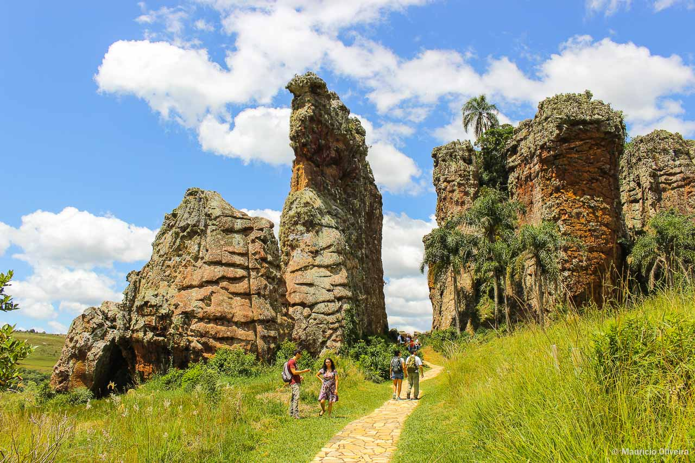
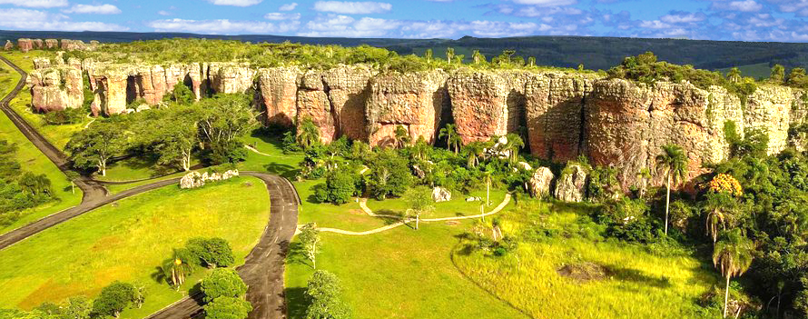

História e Criação do Parque
O Parque Estadual de Vila Velha foi criado em 1953 com o objetivo de preservar suas formações rochosas e a biodiversidade local, tornando-se a primeira unidade de conservação estabelecida no estado do Paraná. A região, no entanto, carrega uma rica memória cultural que antecede sua preservação oficial: lendas indígenas locais, como a famosa lenda dos Abaguarás, buscam explicar a origem mística das colossais esculturas de pedra. Ao longo das décadas, o parque se consolidou como um dos destinos turísticos e científicos mais importantes do sul do Brasil, unindo a preservação ambiental ao resgate histórico da região de Ponta Grossa.

Atrativos e Características Principais
O parque é famoso por oferecer aos visitantes uma experiência única em meio à natureza, destacando-se por três atrações principais: os Arenitos, as Furnas e a Lagoa Dourada. Os Arenitos são formações rochosas esculpidas pela ação do tempo, onde os visitantes podem identificar figuras icônicas como a "Taça" e o "Camelo". Já as Furnas impressionam por serem grandes poços de desabamento subterrâneos com paredões verticais e água no fundo, enquanto a Lagoa Dourada encanta pelo efeito visual de suas águas cristalinas ao refletirem a luz do sol. O local conta com trilhas estruturadas, arvorismo e passeios guiados que garantem o turismo sustentável.

Geologia e Importância para a História da Terra
Do ponto de vista geológico, Vila Velha é um verdadeiro livro aberto sobre o passado da Terra, pois suas rochas areníticas começaram a se formar há mais de 300 milhões de anos, durante o Período Carbonífero. Naquela época, a região fazia parte do supercontinente Gondwana e esteve coberta por geleiras; o degelo acumulou grandes volumes de areia que, com o passar das eras e os movimentos tectônicos, compactaram-se até virar pedra. A posterior erosão provocada pela chuva e pelo vento moldou as estruturas atuais, tornando o parque um sítio geológico fundamental para compreender os eventos climáticos e a evolução do planeta ao longo de eras geológicas.

Memoria e patrimônio
Imagens em memoria ao parque Vila Velha


Curiosidades
Origem Há 300 Milhões de Anos
A história geológica começou no período Carbonífero, quando a região era um imenso mar glacial coberto por gelo e conectada ao supercontinente.
As Furnas e a Lagoa Dourada
O parque abriga imensos somidouros, crateras giganteras com àgua no fundo e a lagoa dourada Cujas águas ficam com reflexos dourados quando a luz do sol bate em angulos específicos.